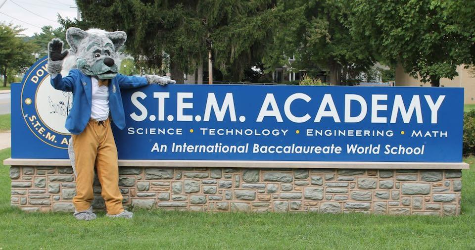

Announcements
1/22/19
Reminder! The Woodworking Club Permission Slips are due on FRIDAY(1/25/19).
You can give them to either Mr. Barker or any of the club advisors in room 212.
-Mr. Marron(10th Grade Engineering)
1/14/19
Are you interested in programming? Do you like coding in JavaScript and C+?
Do you like to tackle real-world challenges with advancing technology?
Well, the Software Engineering Club is just for you!
Come down to room 103 tomorrow, January 15, during 7th period for an informational meeting.
All are welcome, and no experience is required. See you there!
-Mr. Krause(11th Grade Computer Science)
1/02/19
There will be after school help sessions for CAD Engineering and orthographic drawings today, in room 109 until 4pm.
-Mrs. Hauer(9th Grade Engineering)
12/21/19
The Society of Women Engineers Club, SWE, is canceled today due to midterms this week. Good luck!
-Mrs. Long(11/12th Grade Design Technology)
Our School
The Downingtown STEM Academy is the third high school in the Downingtown Area School District.
The STEM Academy opened in the fall of 2011 at 335 Manor Avenue, Downingtown, PA 19335.

The Academy is an IB World School offering every student the opportunity to earn an IB Diploma.
The curriculum offers Science, Technology, Engineering, and Mathematics Pathways.
Students are engaged in rigorous, challenging academic work that requires a mindset of growth and effort.

The abundance of technology and engineering courses at STEM has helped students in their lives
beyond high school and college. They are able to use life skills in their everyday lives.
Our staff members are trained for the IB curriculum and help students thrive every day.
GO TO OUR MARCHING BAND PAGE
GO TO FIND INFORMATION ON STEM TSA
Copyright © 2019 https://flyingtoucans.github.io